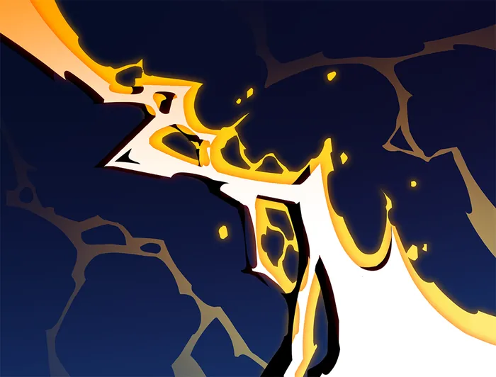
1Éclair
Canalisez 1 Orbe kéraunique.

Édition Le Défectueux · Cartouche slay_defect.gba
« Un automate, trois emplacements, une infinité de circuits. »
Le héros des ingénieurs : chaque orbe canalisé travaille pour vous, tour après tour. Montez votre Focalisation, alignez foudre et glace, et regardez la machine s'emballer.
Automate conçu pour purger la Tour, le Défectueux a développé une conscience propre après une défaillance de ses sous-systèmes de ciblage. Alimenté par un noyau fissuré, il fait graviter autour de son châssis des orbes de foudre, de givre, de ténèbres et de plasma.
Idéal pour les joueurs qui aiment planifier, optimiser et voir un moteur tourner tout seul.
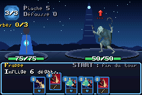
Le Défectueux Canalise des Orbes dans ses emplacements. Chaque orbe agit seul à la fin du tour (kéraunique : dégâts, glaciaire : Armure, ténébreux : charge, plasma : énergie) et libère un effet plus fort quand il est Activé ou expulsé par un nouvel orbe. La Focalisation renforce tous les orbes à la fois.

1Canalisez 1 Orbe kéraunique.
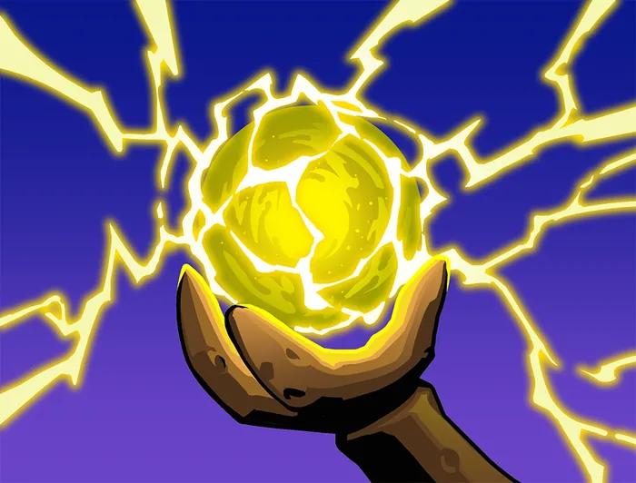
1Infligez 7 dégâts.
Canalisez 1 Orbe kéraunique.
Infligez 10 dégâts.
Canalisez 1 Orbe kéraunique.
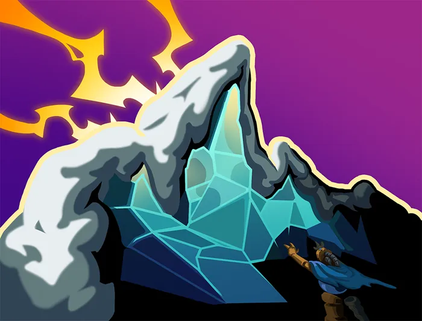
2Gagnez 6 d'Armure.
Canalisez 2 Orbes glaciaires.
Gagnez 9 d'Armure.
Canalisez 2 Orbes glaciaires.
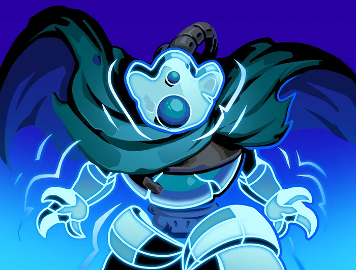
3Éthéré.
La première carte que vous jouez chaque tour est jouée une fois supplémentaire.
La première carte que vous jouez chaque tour est jouée une fois supplémentaire.
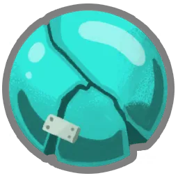
Au début de chaque combat, Canalisez 1 Orbe kéraunique.
Choisissez l’apparence de Le Défectueux au lancement de chaque partie.
Le châssis automatique en cobalt forgé.
Une finition orange vif surchargée d'énergie.
Un alliage noir mat dénué de tout reflet lumineux.
Une structure en laiton doré restaurée d'un âge perdu.
Ce qui est déjà implémenté dans le code du jeu, sur l'ensemble des cartes, reliques et mécaniques de Le Défectueux.
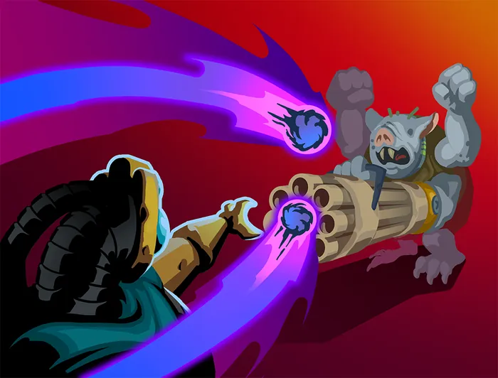
1Activez votre Orbe le plus à droite 2 fois.
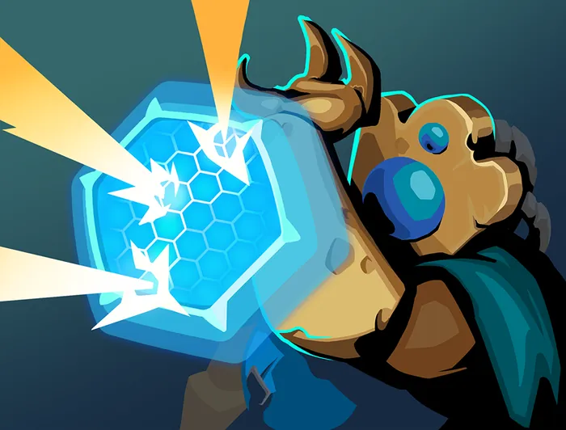
1Gagnez 5 d'Armure.
Gagnez 8 d'Armure.
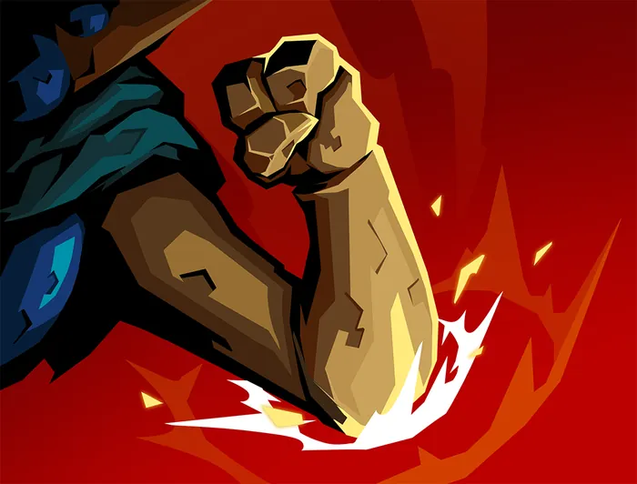
1Infligez 6 dégâts.
Infligez 9 dégâts.
Canalisez 1 Orbe kéraunique.
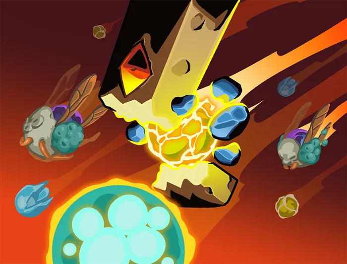
1Infligez 5 dégâts pour chaque Orbe Canalisé.
Infligez 7 dégâts pour chaque Orbe Canalisé.
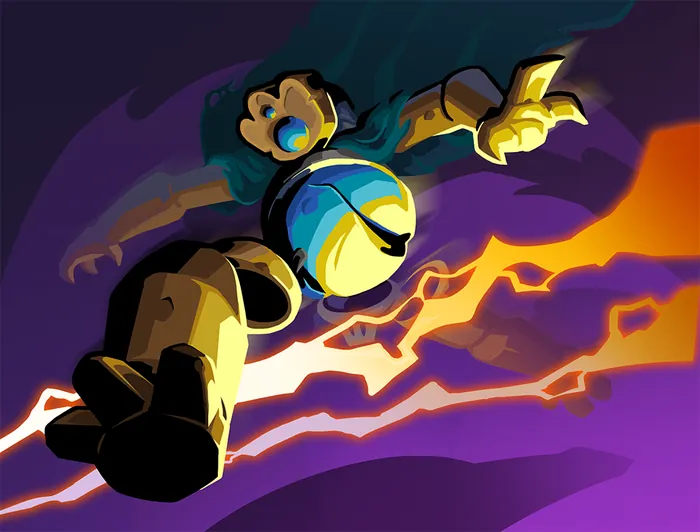
1Gagnez 9 d'Armure.
Gagnez 12 d'Armure.
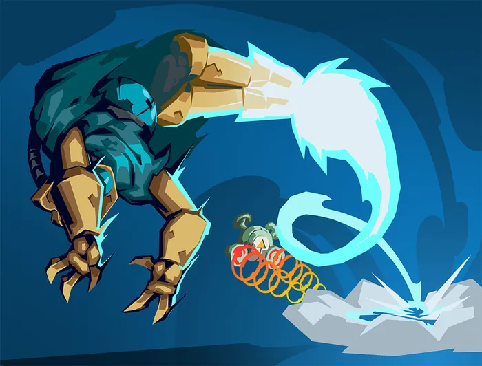
0Gagnez 6 d'Armure.
Ajoutez Hébété à votre Défausse.
Gagnez 9 d'Armure.
Ajoutez Hébété à votre Défausse.
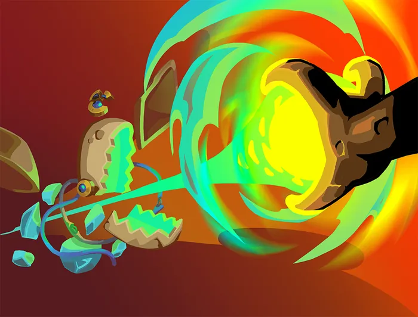
1Infligez 7 dégâts.
Piochez 1 carte pour chaque Orbe unique.
Infligez 10 dégâts.
Piochez 1 carte pour chaque Orbe unique.
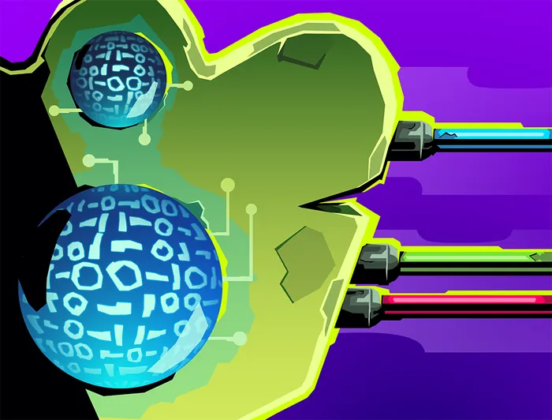
0Gagnez 2 de Focalisation ce tour.
Épuisement.
Gagnez 2 de Focalisation ce tour.
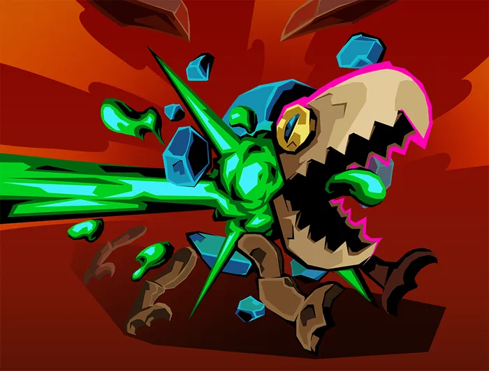
1Infligez 4 dégâts 3 fois.
Ajoutez Englué à votre Défausse.
Infligez 5 dégâts 3 fois.
Ajoutez Englué à votre Défausse.
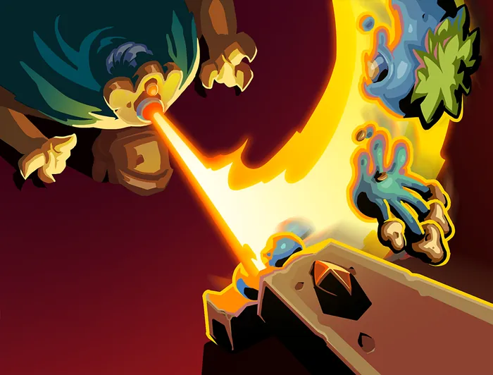
1Infligez 6 dégâts à TOUS les ennemis.
Piochez 1 carte.
Infligez 9 dégâts à TOUS les ennemis.
Piochez 1 carte.
Infligez 7 dégâts.
Canalisez 1 Orbe kéraunique.
Infligez 10 dégâts.
Canalisez 1 Orbe kéraunique.
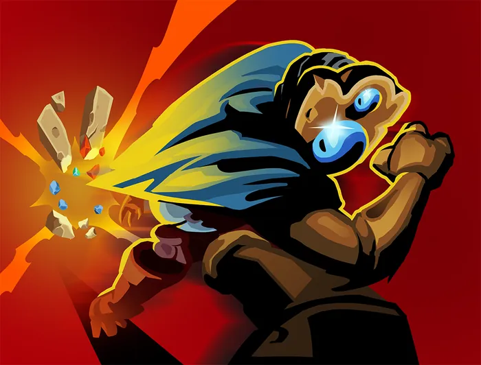
1Infligez 11 dégâts.
Réduisez le coût de cette carte à 0 ●.
Infligez 15 dégâts.
Réduisez le coût de cette carte à 0 ●.
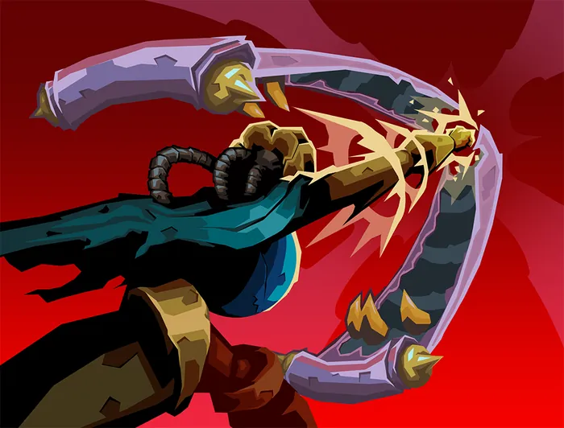
1Infligez 9 dégâts.
Gagnez 1 de Focalisation jusqu'à la fin du tour.
Infligez 11 dégâts.
Gagnez 2 de Focalisation jusqu'à la fin du tour.
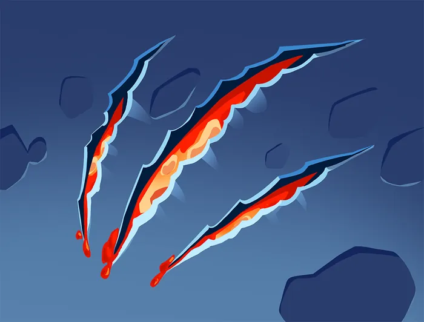
0Infligez 3 dégâts.
Augmentez les dégâts de TOUTES les cartes Griffure de 2 jusqu'à la fin du combat.
Infligez 4 dégâts.
Augmentez les dégâts de TOUTES les cartes Griffure de 3 jusqu'à la fin du combat.
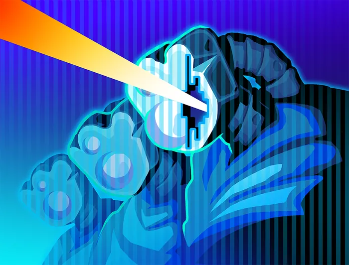
1Gagnez 3 d'Armure.
Placez une carte de votre Défausse à votre Main.
Épuisement.
Gagnez 5 d'Armure.
Placez une carte de votre Défausse à votre Main.
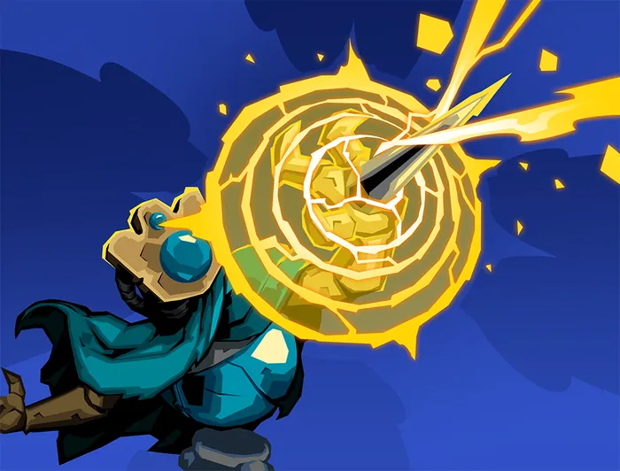
1Gagnez 4 d'Armure.
Au début de vos 2 prochains tours, Canalisez 1 Orbe kéraunique.
Gagnez 7 d'Armure.
Au début de vos 2 prochains tours, Canalisez 1 Orbe kéraunique.
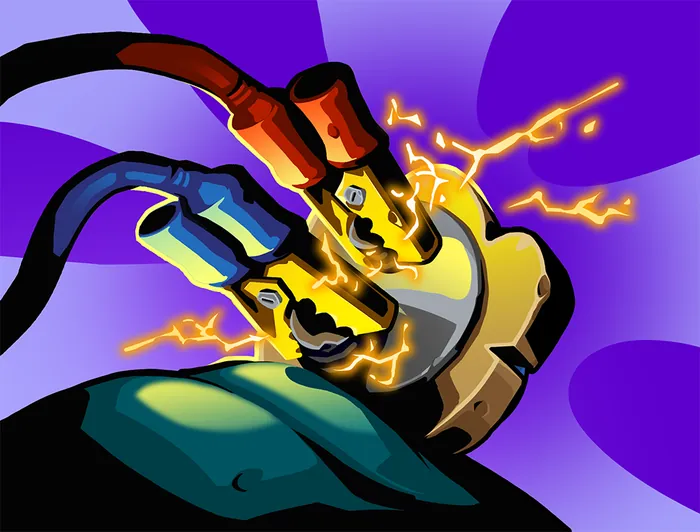
1Gagnez 7 d'Armure.
Au prochain tour, gagnez 1 ●.
Gagnez 10 d'Armure.
Au prochain tour, gagnez 1 ●.
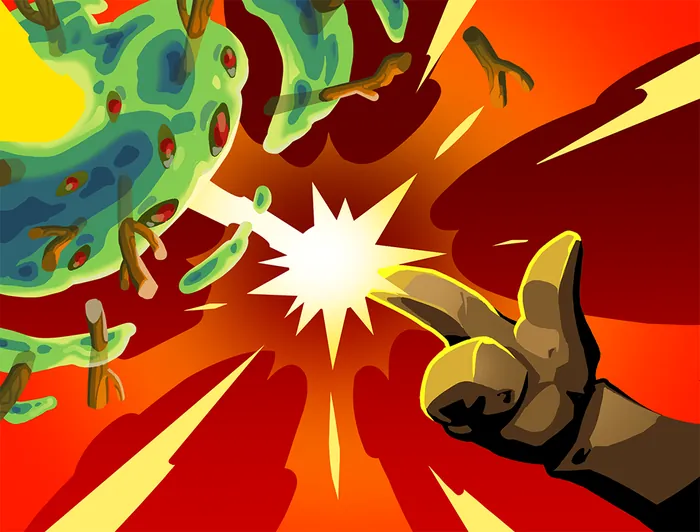
0Infligez 3 dégâts.
Appliquez Vulnérable (1).
Infligez 4 dégâts.
Appliquez Vulnérable (2).
Canalisez 1 Orbe glaciaire.
Piochez 1 carte.
Canalisez 1 Orbe glaciaire.
Piochez 2 cartes.
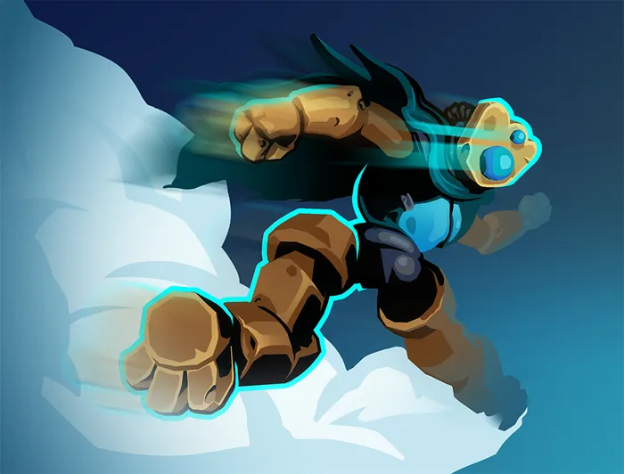
0Gagnez 2 ●.
Ajoutez un Néant à votre Défausse.
Gagnez 3 ●.
Ajoutez un Néant à votre Défausse.
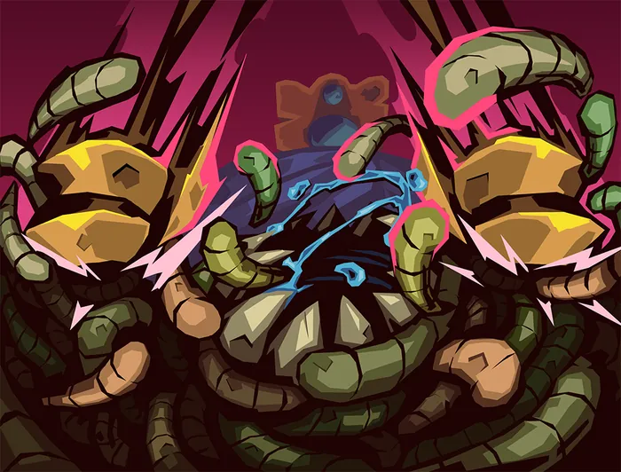
2Infligez 6 dégâts 2 fois.
Jouez une Attaque aléatoire depuis votre Pioche.
Infligez 8 dégâts 2 fois.
Jouez une Attaque aléatoire depuis votre Pioche.
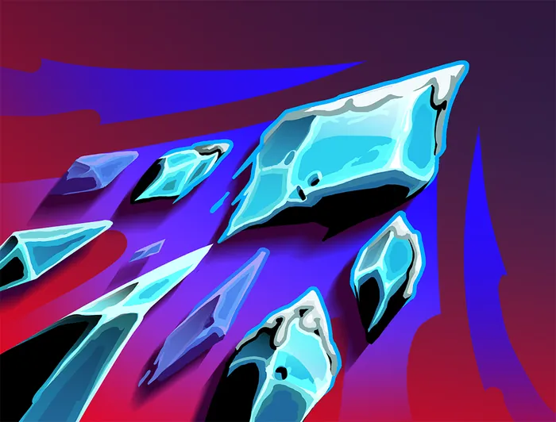
1Infligez 6 dégâts.
Canalisez 1 Orbe glaciaire.
Infligez 9 dégâts.
Canalisez 1 Orbe glaciaire.
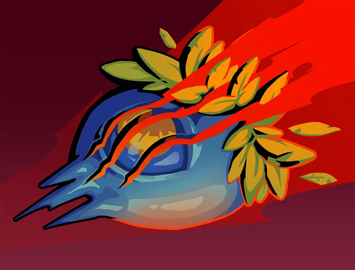
0Infligez 3 dégâts.
Si l'ennemi s'apprête à attaquer, appliquez Affaibli (1).
Infligez 4 dégâts.
Si l'ennemi s'apprête à attaquer, appliquez Affaibli (2).
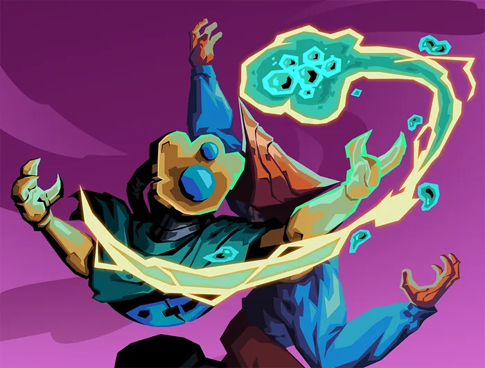
1Un autre joueur Canalise un Orbe plasmique.
Épuisement.
Un autre joueur Canalise un Orbe plasmique.
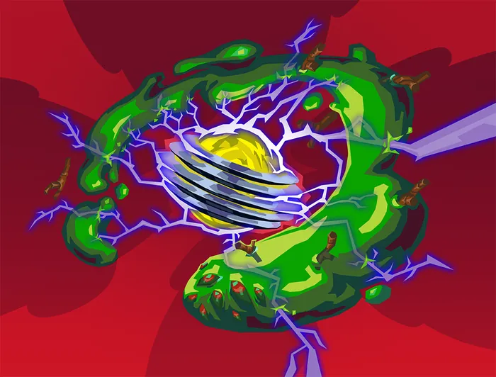
0Infligez 3 dégâts.
Déclenchez la capacité passive de tous vos Orbes kérauniques sur l'ennemi.
Infligez 4 dégâts.
Déclenchez deux fois la capacité passive de tous vos Orbes kérauniques sur l'ennemi.
Au début de votre tour, déclenchez la capacité passive de votre Orbe le plus à droite.
Au début de votre tour, déclenchez la capacité passive de votre Orbe le plus à droite 2 fois.
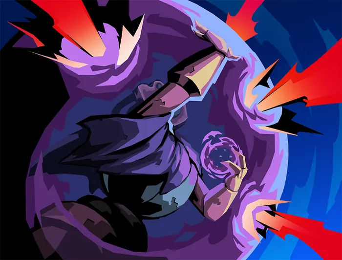
2Gagnez 11 d'Armure.
Canalisez 1 Orbe ténébreux.
Gagnez 15 d'Armure.
Canalisez 1 Orbe ténébreux.
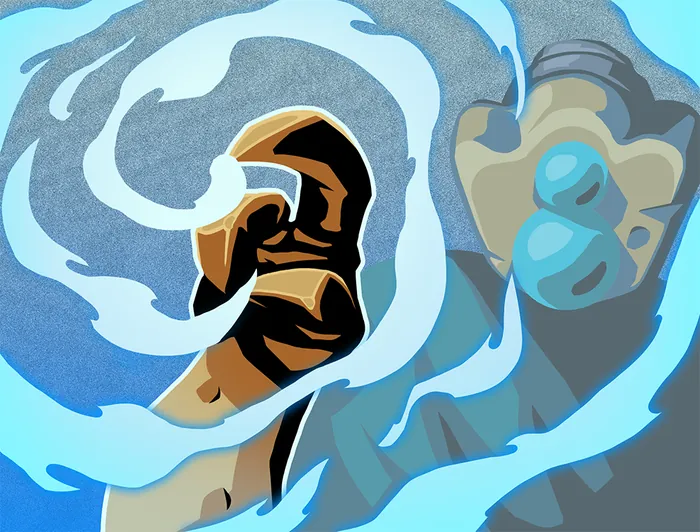
1Ajoutez un Pouvoir aléatoire à votre Main. Il coûte 0 ce tour.
Épuisement.
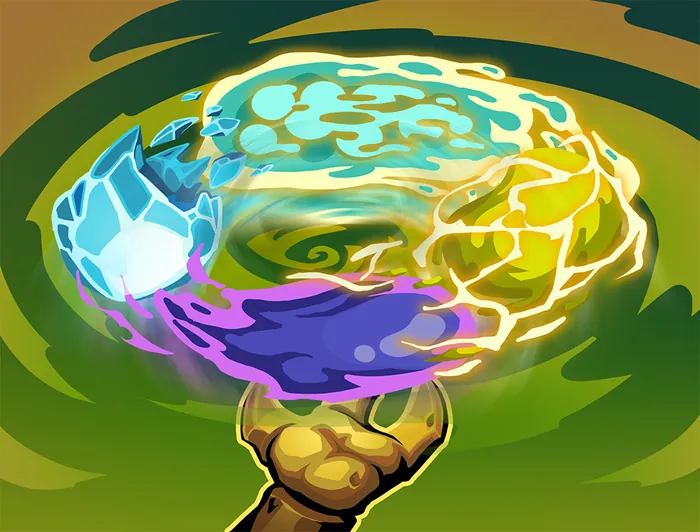
1Canalisez 1 Orbe aléatoire.
Canalisez 2 Orbes aléatoires.
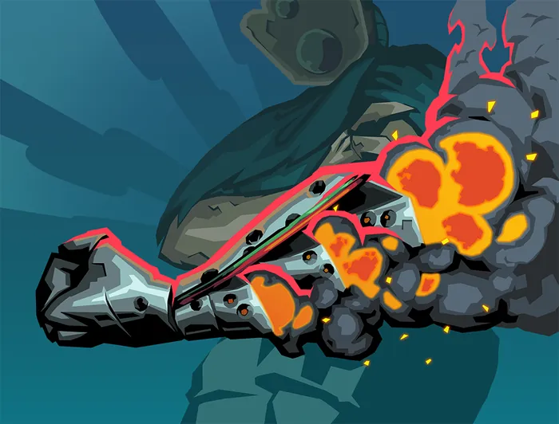
1Lorsque vous créez un Statut, infligez 5 dégâts à TOUS les ennemis.
Lorsque vous créez un Statut, infligez 7 dégâts à TOUS les ennemis.
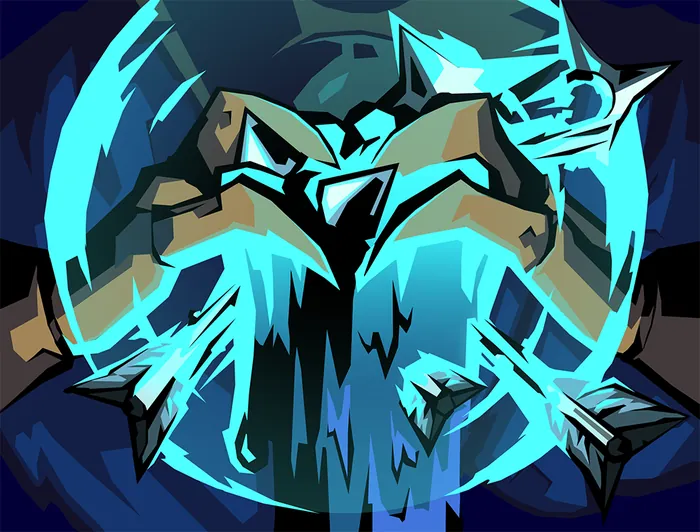
1Gagnez 6 d'Armure.
Transformez toutes les cartes Statut de votre Main en Combustible.
Gagnez 7 d'Armure.
Transformez toutes les cartes Statut de votre Main en Combustible+.
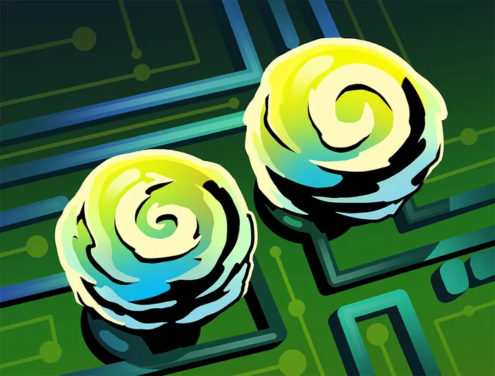
1Gagnez 2 Emplacements d'Orbe.
Gagnez 3 Emplacements d'Orbe.
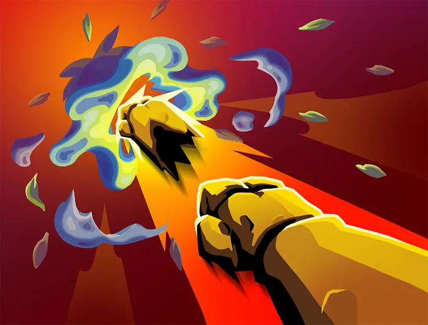
0Infligez 5 dégâts.
Si vous avez joué moins de 3 cartes ce tour, piochez 1 carte.
Infligez 6 dégâts.
Si vous avez joué moins de 4 cartes ce tour, piochez 1 carte.
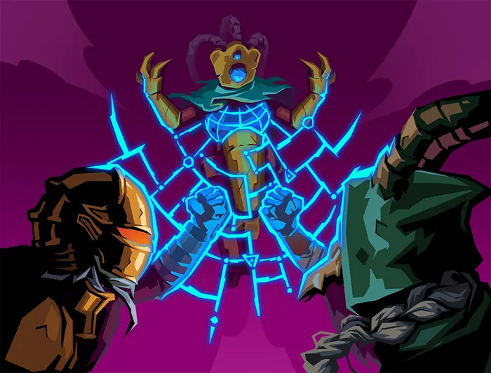
1TOUS les joueurs gagnent 2 ●.
Épuisement.
TOUS les joueurs gagnent 3 ●.
Épuisement.
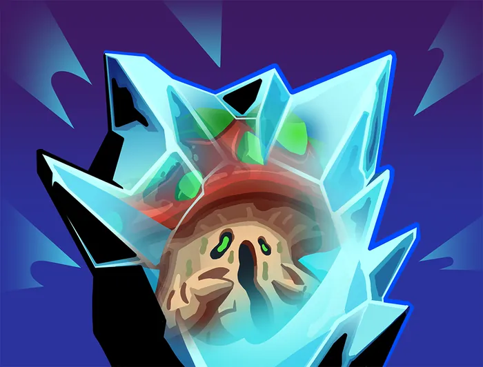
0Canalisez 1 Orbe glaciaire pour chaque ennemi.
Épuisement.
Canalisez 1 Orbe glaciaire pour chaque ennemi.
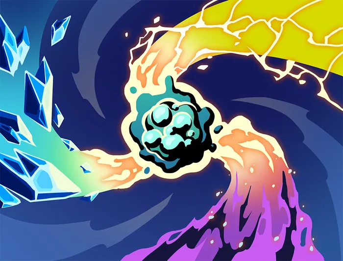
1Canalisez 1 Orbe plasmique.
Épuisement.
Canalisez 1 Orbe plasmique.
Gagnez 6 d'Armure.
Canalisez 2 Orbes glaciaires.
Gagnez 9 d'Armure.
Canalisez 2 Orbes glaciaires.
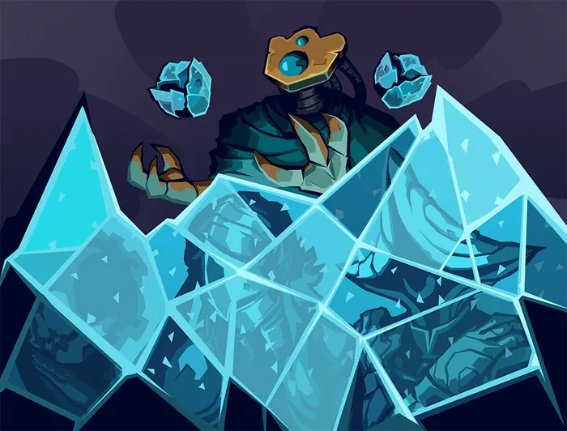
2Ce tour, vos Orbes glaciaires confèrent de l'Armure à TOUS les alliés.
Canalisez 2 Orbes glaciaires.
Ce tour, vos Orbes glaciaires confèrent de l'Armure à TOUS les alliés.
Canalisez 3 Orbes glaciaires.
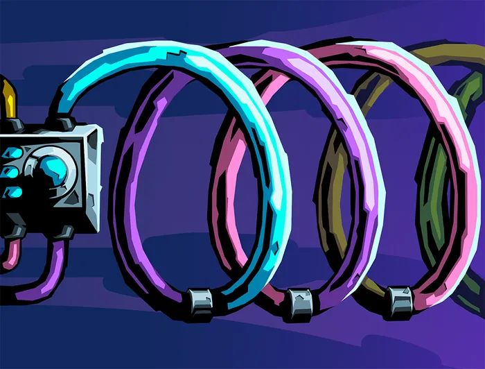
1La première fois de chaque tour que vous piochez une carte Statut, piochez 2 cartes.
La première fois de chaque tour que vous piochez une carte Statut, piochez 3 cartes.
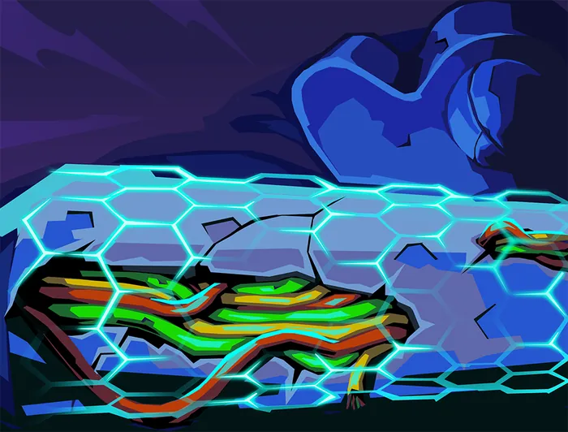
1Gagnez 13 d'Armure.
Ajoutez 2 Plaies à votre Défausse.
Gagnez 17 d'Armure.
Ajoutez 2 Plaies à votre Défausse.
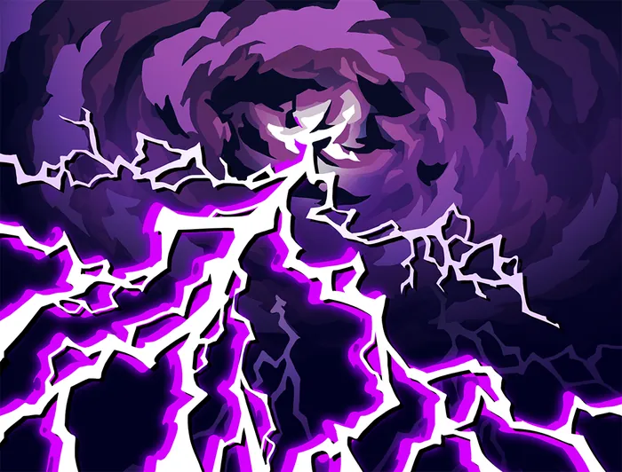
1Lorsque vous jouez un Pouvoir, Canalisez 1 Orbe kéraunique.
Lorsque vous jouez un Pouvoir, Canalisez 2 Orbes kérauniques.
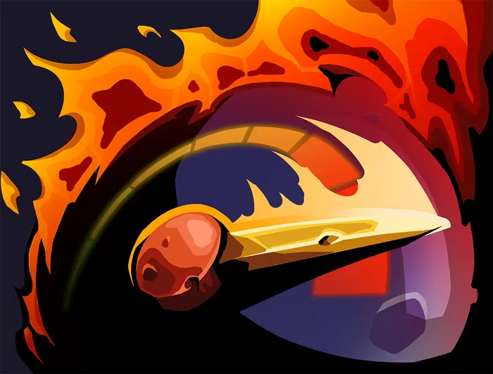
0Piochez 2 cartes.
Ajoutez une Brûlure à votre Défausse.
Piochez 3 cartes.
Ajoutez une Brûlure à votre Défausse.
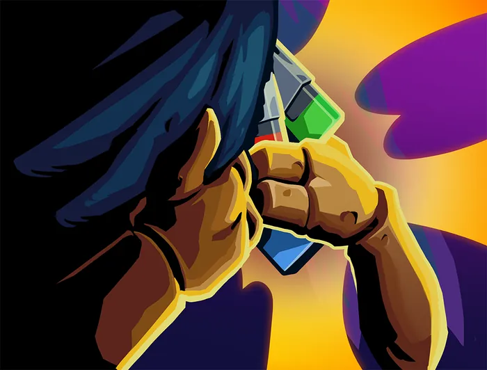
1Piochez 3 cartes.
Piochez 4 cartes.
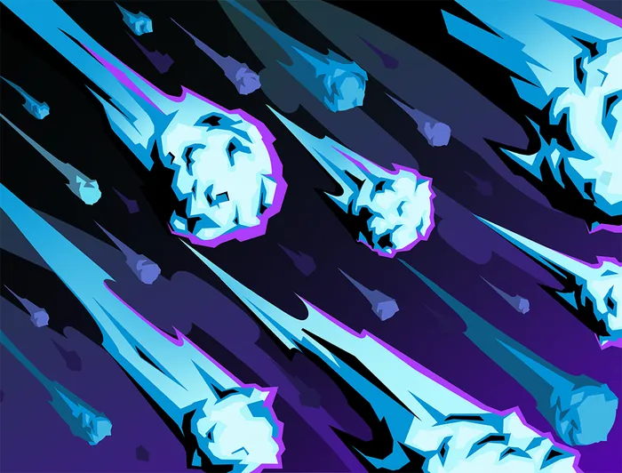
1À la fin de votre tour, si vous avez un Orbe glaciaire, infligez 6 dégâts à TOUS les ennemis.
À la fin de votre tour, si vous avez un Orbe glaciaire, infligez 8 dégâts à TOUS les ennemis.
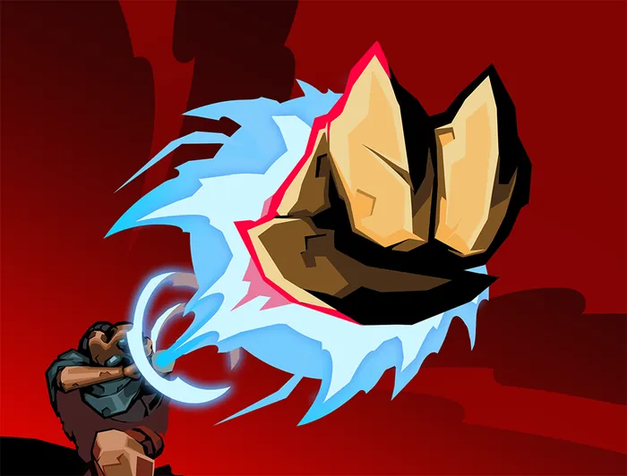
2Infligez 13 dégâts.
Piochez 1 carte.
Lorsque vous créez une carte Statut, réduisez le coût de cette carte de 1 ● jusqu'à ce qu'elle soit jouée.
Infligez 14 dégâts.
Piochez 2 cartes.
Lorsque vous créez une carte Statut, réduisez le coût de cette carte de 1 ● jusqu'à ce qu'elle soit jouée.
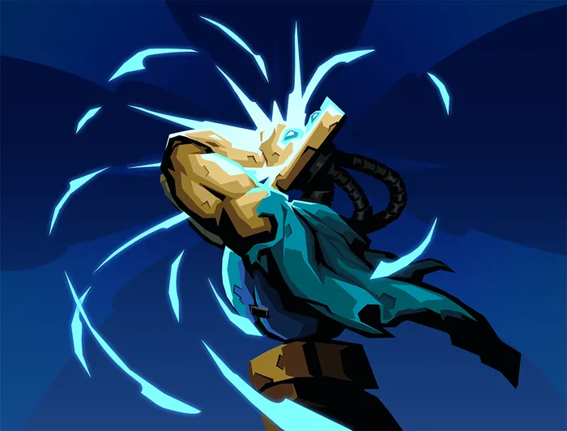
2Perdez 1 Emplacement d'Orbe.
Gagnez 2 de Force.
Gagnez 2 de Dextérité.
Perdez 1 Emplacement d'Orbe.
Gagnez 3 de Force.
Gagnez 3 de Dextérité.
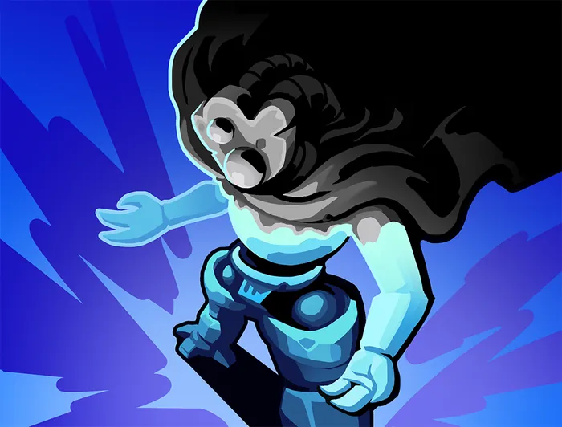
0Inné.
Gagnez 10 d'Armure.
Épuisement.
Inné.
Gagnez 13 d'Armure.
Épuisement.
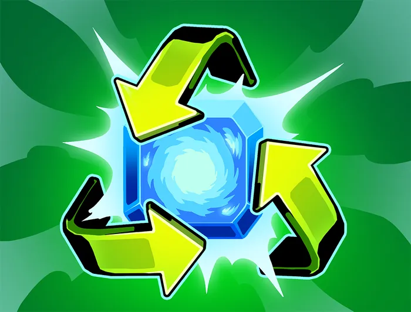
1Épuisez une carte.
Au prochain tour, gagnez 2 ●.
Épuisez une carte.
Au prochain tour, gagnez 3 ●.
Infligez 10 dégâts 2 fois.
Canalisez 2 Orbes vitreux.
Infligez 13 dégâts 2 fois.
Canalisez 2 Orbes vitreux.
La première fois de chaque tour que vous jouez une
Attaque coûtant 0 ●,
celle-ci retourne dans votre Main.
Infligez 26 dégâts.
Si ceci tue un ennemi, gagnez 3 ●.
Infligez 34 dégâts.
Si ceci tue un ennemi, gagnez 3 ●.
Lorsque vous jouez un Pouvoir, gagnez ●.
Gagnez 1 de Focalisation jusqu'à la fin du tour pour chaque Orbe unique que vous avez.
Gagnez 2 de Focalisation jusqu'à la fin du tour pour chaque Orbe unique que vous avez.
Infligez 14 dégâts.
Le prochain Pouvoir que vous jouez coûte 0 ●.
Infligez 20 dégâts.
Le prochain Pouvoir que vous jouez coûte 0 ●.
Canalisez X Orbes kérauniques.
Canalisez X+1 Orbes kérauniques.
Lorsque vous Activez vos Orbes kérauniques, infligez 8 dégâts à chaque ennemi touché.
Lorsque vous Activez vos Orbes kérauniques, infligez 11 dégâts à chaque ennemi touché.
Canalisez 1 Orbe ténébreux.
Déclenchez la capacité passive de tous vos Orbes ténébreux.
Canalisez 1 Orbe ténébreux.
Déclenchez la capacité passive de tous vos Orbes ténébreux 2 fois.
Infligez 10 dégâts.
Appliquez Affaibli (1).
Canalisez 1 Orbe ténébreux.
Infligez 13 dégâts.
Appliquez Affaibli (2).
Canalisez 1 Orbe ténébreux.
Gagnez 5 d'Armure.
Canalisez 1 Orbe vitreux.
Gagnez 8 d'Armure.
Canalisez 1 Orbe vitreux.
Doublez votre Énergie.
Épuisement.
Infligez 7 dégâts.
Piochez 4 cartes.
Défaussez toutes les cartes ainsi piochées qui ne coûtent pas 0 ●.
Infligez 10 dégâts.
Piochez 5 cartes.
Défaussez toutes les cartes ainsi piochées qui ne coûtent pas 0 ●.
Activez votre Orbe le plus à droite X fois.
Activez votre Orbe le plus à droite X+1 fois.
Gagnez 1 d'Armure.
Augmentez l'Armure conférée par cette carte de 3 de façon permanente.
Épuisement.
Gagnez 1 d'Armure.
Augmentez l'Armure conférée par cette carte de 4 de façon permanente.
Épuisement.
Le prochain Pouvoir que vous jouez est joué une fois supplémentaire.
Épuisement.
Choisissez un autre joueur.
Les 2 prochaines fois qu'il joue un Pouvoir, jouez-en une copie.
Épuisement.
Choisissez un autre joueur.
Les 3 prochaines fois qu'il joue un Pouvoir, jouez-en une copie.
Épuisement.
Canalisez 1 Orbe kéraunique.
Canalisez 1 Orbe glaciaire.
Canalisez 1 Orbe ténébreux.
Épuisement.
Canalisez 1 Orbe kéraunique.
Canalisez 1 Orbe glaciaire.
Canalisez 1 Orbe ténébreux.
Épuisez TOUTES vos cartes Statut.
Infligez 8 dégâts à un ennemi aléatoire pour chaque carte Épuisée.
Épuisez TOUTES vos cartes Statut.
Infligez 11 dégâts à un ennemi aléatoire pour chaque carte Épuisée.
Gagnez 1 de Focalisation.
Gagnez 2 de Focalisation.
Infligez 7 dégâts à TOUS les ennemis.
Activez tous vos Orbes deux fois.
Épuisement.
Infligez 11 dégâts à TOUS les ennemis.
Activez tous vos Orbes deux fois.
Épuisement.
Éthéré.
La première carte que vous jouez chaque tour est jouée une fois supplémentaire.
La première carte que vous jouez chaque tour est jouée une fois supplémentaire.
Infligez 18 dégâts.
Ajoutez une copie de cette carte coûtant 0 ● à votre Défausse.
Infligez 23 dégâts.
Ajoutez une copie de cette carte coûtant 0 ● à votre Défausse.
Infligez 24 dégâts.
Canalisez 3 Orbes plasmiques.
Infligez 30 dégâts.
Canalisez 3 Orbes plasmiques.
Au début de votre tour, ajoutez un Pouvoir aléatoire à votre Main.
Infligez 19 dégâts.
Canalisez 3 Orbes glaciaires.
Infligez 24 dégâts.
Canalisez 3 Orbes glaciaires.
Au début de votre tour, piochez 1 carte supplémentaire.
Inné.
Au début de votre tour, piochez 1 carte supplémentaire.
Gagnez 1 Emplacement d'Orbe.
Piochez 1 carte. Augmentez le coût de cette carte de 1.
Gagnez 1 Emplacement d'Orbe.
Piochez 2 cartes. Augmentez le coût de cette carte de 1.
Canalisez 2 Orbes ténébreux.
À la fin de votre tour, Activez votre Orbe le plus à gauche.
Canalisez 3 Orbes ténébreux.
À la fin de votre tour, Activez votre Orbe le plus à gauche.
Infligez 3 dégâts pour chaque ● dépensé pour jouer d'autres cartes ce tour.
Infligez 5 dégâts pour chaque ● dépensé pour jouer d'autres cartes ce tour.
Mélangez TOUTES vos cartes dans votre Pioche.
Piochez 4 cartes.
Épuisement.
Mélangez TOUTES vos cartes dans votre Pioche.
Piochez 6 cartes.
Épuisement.
Lorsque vous créez une carte Statut, Canalisez 1 Orbe aléatoire.
Gagnez 4 ●.
Épuisement.
Gagnez 6 ●.
Épuisement.
Intercepte la prochaine perte de PV.
Intercepte les 2 prochaines pertes de PV.
Au début de votre tour, Canalisez 1 Orbe vitreux.
Canalisez 1 Orbe vitreux.
Au début de votre tour, Canalisez 1 Orbe vitreux.
Infligez 10 dégâts.
Placez TOUTES les cartes coûtant 0 ● de votre Défausse dans votre Main.
Infligez 14 dégâts.
Placez TOUTES les cartes coûtant 0 ● de votre Défausse dans votre Main.
Infligez 24 dégâts à TOUS les ennemis.
Perdez 3 de Focalisation.
Infligez 30 dégâts à TOUS les ennemis.
Perdez 3 de Focalisation.
Les Attaques coûtant 0 ● de TOUS LES JOUEURS infligent 3 dégâts supplémentaires.
Les Attaques coûtant 0 ● de TOUS LES JOUEURS infligent 4 dégâts supplémentaires.
Au début de votre tour, gagnez 2 d'Armure pour chaque Orbe unique.
Au début de votre tour, gagnez 3 d'Armure pour chaque Orbe unique.
Canalisez un nombre d'Orbes kérauniques égal au nombre d'Orbes kérauniques que vous avez déjà Canalisés pendant ce combat.
Épuisement.
Canalisez un nombre d'Orbes kérauniques égal au nombre d'Orbes kérauniques que vous avez déjà Canalisés pendant ce combat.
Activez votre Orbe le plus à droite 4 fois.
Gagnez 5 de Focalisation.
Au début de votre tour, perdez 1 de Focalisation.
Gagnez 6 de Focalisation.
Au début de votre tour, perdez 1 de Focalisation.
Au début de chaque combat, Canalisez 1 Orbe kéraunique.
Commencez chaque combat avec 1 de Focalisation.
Si vous avez perdu des PV lors du tour précédent, déclenchez la capacité passive de chacun de vos Orbes au début de votre tour.
Votre orbe le plus à droite déclenche sa capacité passive une fois de plus.
La première fois que vous Canalisez 7 Orbes dans un combat, infligez 30 dégâts à TOUS les ennemis.
Au début de chaque combat, ajoutez 2 cartes de coût 0 de votre Pioche à votre Main.
Démarrez chaque combat avec 3 Emplacements d'Orbe supplémentaires.
Au début de chaque combat, Canalisez 1 Orbes ténébreux.